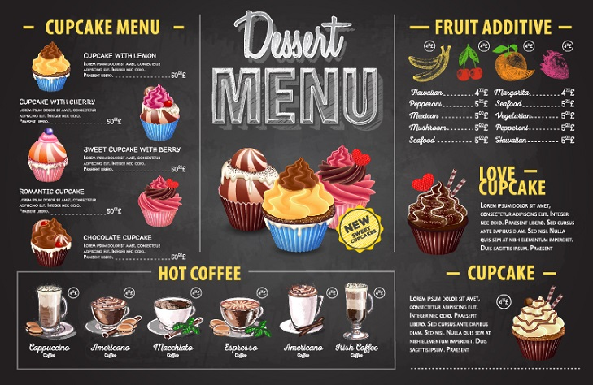
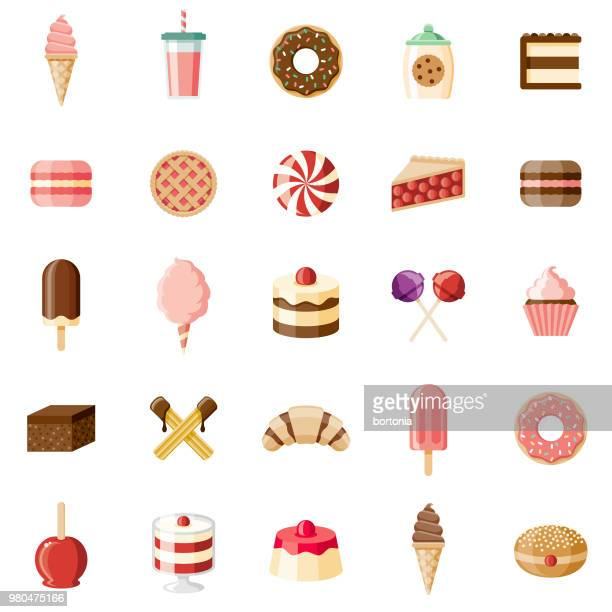

Here's the top-10 fun facts you should know!
-
The Origin of the Word Dessert
The word “dessert” actually originated from the French word desservir, meaning “to clear the table.” This refers to the fact that desserts are served after the other dishes are cleared off the table.
-
The Most Expensive Dessert
The Frrrozen Haute Chocolate ice cream sundae from a restaurant called Serendipity 3 in New York takes the cake as the most expensive dessert. It costs $25,000 and is so expensive partly due to the fact that it contains five grams of edible 23-karat gold.
-
Chocolate Chip Cookies Eaten Each Year
Each year, seven billion chocolate chips are consumed in the United States. This equates to over 19.2 million cookies eaten a day. About 50% of those cookies are homemade, while the others are store-bought.
 -
Weddings at McDonald's
In Hong Kong, McDonald’s offers wedding packages to brides, grooms, and their families. On the menu, the franchise features wedding cakes made completely out of their famous baked apple pies.
-
The Origin of German Chocolate Cake
German chocolate cake isn’t German. It’s actually named after Samuel German, an American baker who worked at Baker’s Chocolate Company. He actually created a new type of baking chocolate that incorporated more sugar than typical semisweet chocolate.
-
How Profesisonal Taste Testers Eat Ice Cream
Ice cream testers use gold spoons for tasting the product instead of regular spoons. Gold eliminates even the slightest “after-taste” that can be caused by the metal or plastic from regular spoons.

-
The Chocolate River Made of Real Chocolate
The chocolate river in the movie Willy Wonka and the Chocolate Factory was made of real chocolate. It contained 150,000 gallons of water mixed with chocolate and cream. The cream made the mixture spoil pretty quickly on set.
-
The Largest Gingerbread House
The largest gingerbread house was built in Texas. It covered an area of more than 2,500 feet and contained more than 35,000,000 calories. It was large enough that an entire family of five could live inside.
-
The World's Biggest Chocolate Bar
According to the Guinness Book of World Records, Armenia holds the title for the world’s biggest chocolate bar. The giant plain chocolate bar, made by the Grand Candy Company, weighed over 9,000 pounds and was created in 2010.
-
Candy Cane Legend
Legend says that the candy cane was invented to keep children quiet in church. In 1670, a choirmaster in Germany handed out sugar sticks among the young singers to keep them quiet during a Christmas ceremony and bent the candies into shepherds’ crooks for the occasion.
